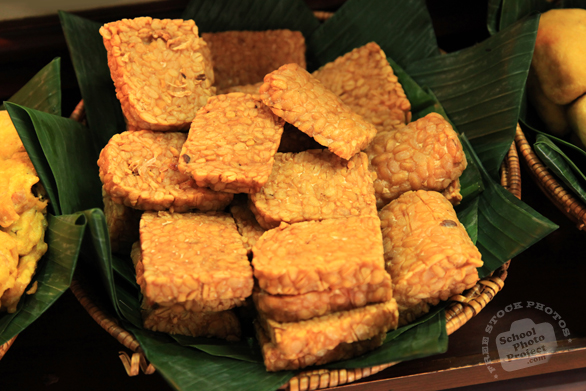

Home
Fried Tempeh

Photo by SchoolPhotoProject.com
A Totally FREE Stock Photos Site!
Slices of fermented soybean cake seasoned with garlic and coriander, then fried until crisp and golden. Nutty, protein-rich, and a staple in many Indonesian meals.
Recipes:
- 200 g tempeh, cut into thin slices
- cloves garlic
- 1/2 tsp ground coriander
- 1 tsp salt
- 100 ml water
- Cooking oil for frying
Steps:
- Crush garlic, coriander, and salt into a paste.
- Add water and mix into a marinade.
- soak tempeh slices in the marinade.
- Heat oil in a pan over medium heat.
- Fry tempeh until golden and crispy
- Drain excess oil and serve hot.